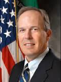

<div id="speakers">
<div class="cell">
<p><strong>David Lebryk</strong> was appointed Fiscal Assistant Secretary on June 30, 2014. Fiscal Assistant Secretary Lebryk brings more than 25 years of service to the Treasury Department, including serving as the Deputy Assistant Secretary for Fiscal Operations and Policy, Deputy Director and Acting Director of the U.S. Mint, and Commissioner of the Financial Management Services. In 2012, Lebryk was appointed as the first Commissioner of the Bureau of the Fiscal Service following the consolidation of the Bureau of the Public Debt and the Financial Management Service.</p>

<p>As Commissioner of the Fiscal Service, Lebryk initiated the Treasury Department's "Intelligent Data" standardization project. As Fiscal Assistant Secretary, Lebryk is the senior executive responsible for Treasury's role in the implementation of the Digital Accountability and Transparency Act, or DATA Act.</p>

<p>Lebryk graduated from Harvard College with an A.B. in economics and a master’s degree in public administration from Harvard University’s John F. Kennedy School of Government.</p>
</div>
</div>